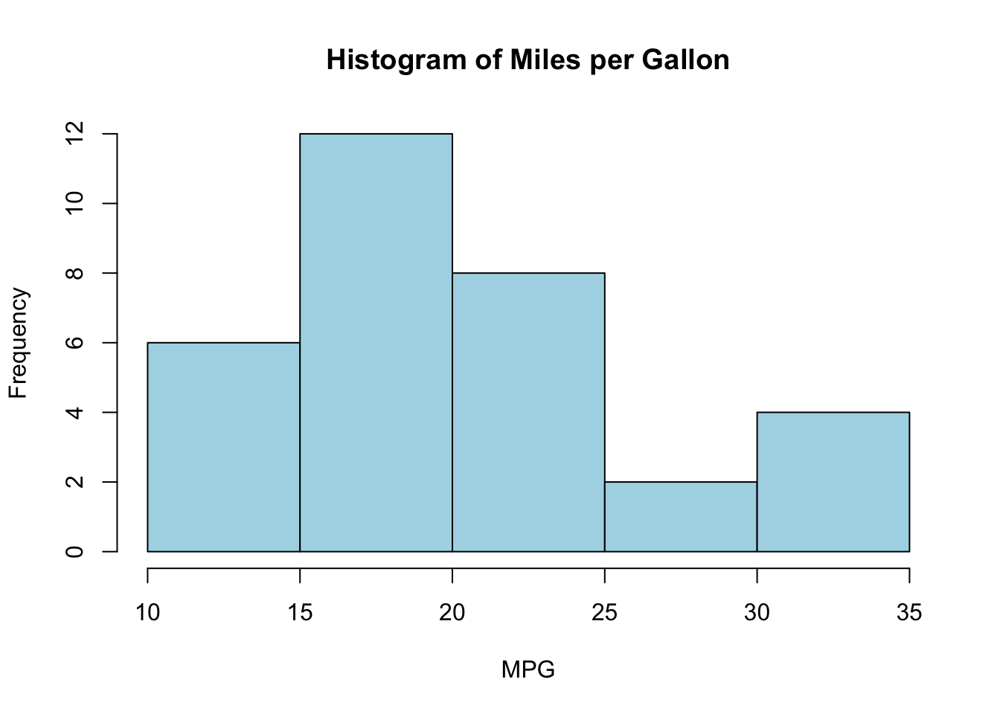
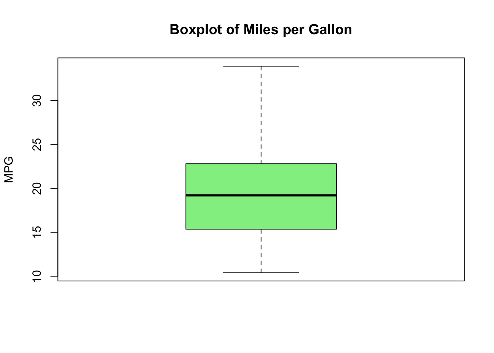
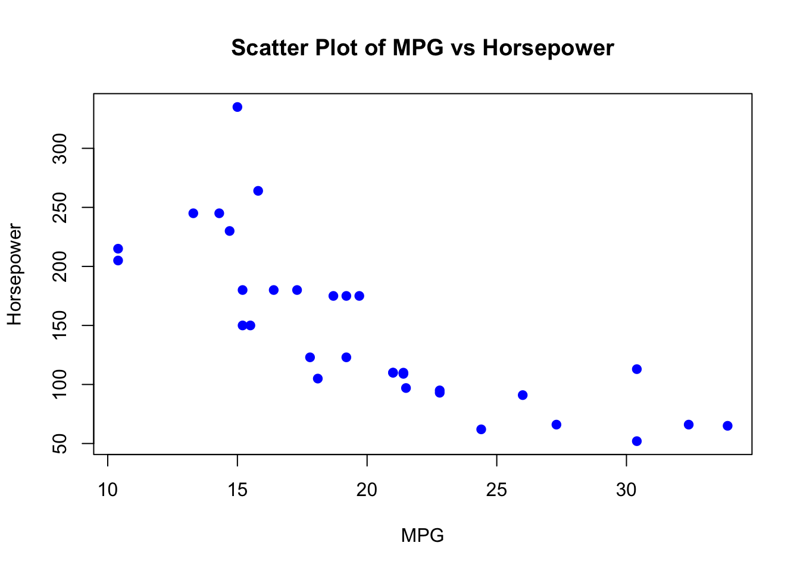
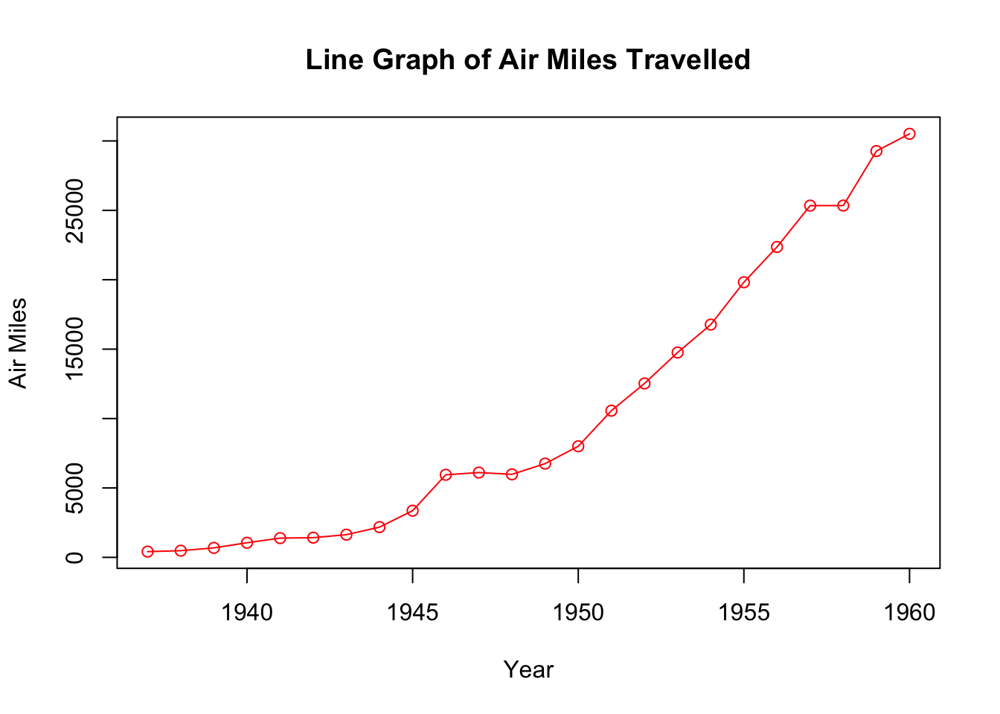
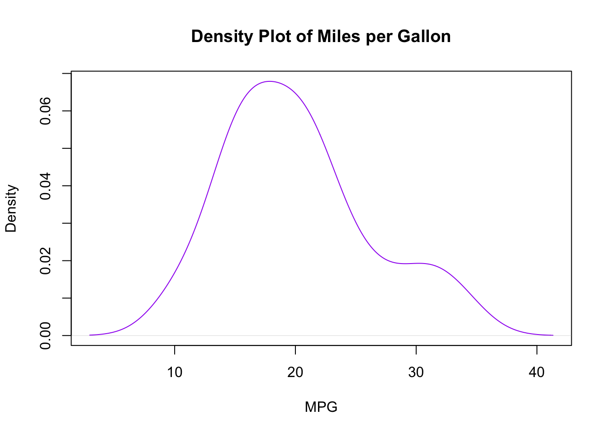
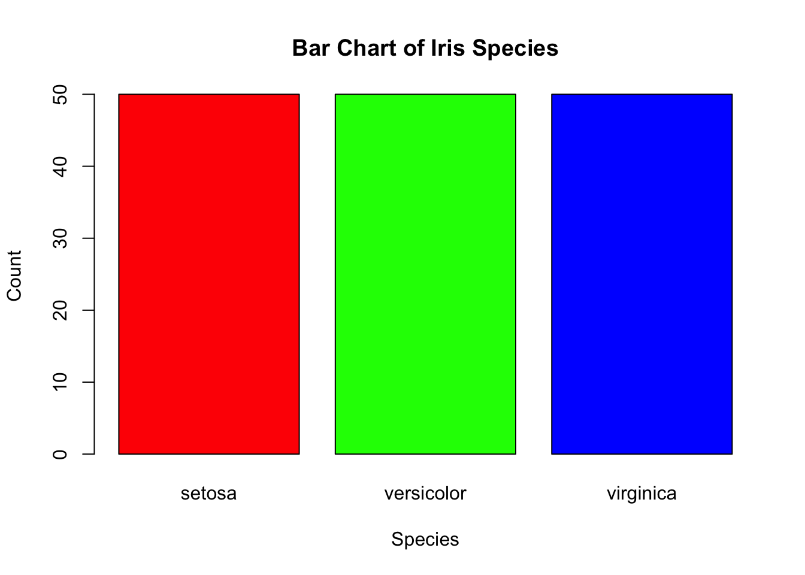
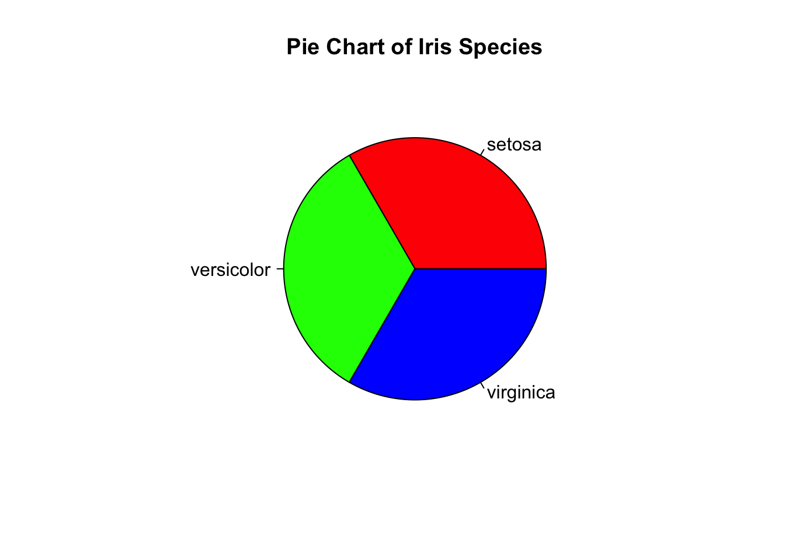

data(mtcars)
mean(mtcars$mpg) # Mean of miles per gallon[1] 20.09062median(mtcars$mpg) # Median of miles per gallon[1] 19.2mode_mpg <- names(sort(table(mtcars$mpg), decreasing = TRUE))[1]
mode_mpg # Mode of miles per gallon[1] "10.4"This section has discussion and code integrated into one.
As the name suggests, descriptive statistics is used to describe data. Instead of presenting raw data in its entirety, we use statistical tools to extract key insights efficiently. This is often in the form of summarising the data.
We naturally use descriptive statistics in everyday conversations. For example, when asked, “How was the weather today?”, one might respond, “Mostly cloudy.” Similarly, when discussing the impact of a drug, one might say, “On average, it was effective in treating the ailment.”
In both cases, we summarize a large set of observations using a simplified measure rather than listing every minute of weather changes or every individual’s response to the drug. Understandably, the latter approach would not yield a fun conversation (We might lose our interlocuter’s interest, even if we are indifferent to our time’s value). Nevertheless, that would have been description of observations in it’s truest form, just not the most efficient.
Since raw data is often vast and complex, descriptive statistics helps organize, summarize, and interpret data efficiently. The techniques used depend on whether the data is numerical (quantitative) or categorical (qualitative).
Numerical data can be summarized using measures of central tendency and dispersion:
data(mtcars)
mean(mtcars$mpg) # Mean of miles per gallon[1] 20.09062median(mtcars$mpg) # Median of miles per gallon[1] 19.2mode_mpg <- names(sort(table(mtcars$mpg), decreasing = TRUE))[1]
mode_mpg # Mode of miles per gallon[1] "10.4"range(mtcars$mpg) # Range of miles per gallon[1] 10.4 33.9var(mtcars$mpg) # Variance of miles per gallon[1] 36.3241sd(mtcars$mpg) # Standard deviation of miles per gallon[1] 6.026948IQR(mtcars$mpg) # Interquartile range of miles per gallon[1] 7.375To visualize numerical data effectively, the following tools are commonly used:
hist(mtcars$mpg, main = "Histogram of Miles per Gallon", xlab = "MPG", col = "lightblue", border = "black")
boxplot(mtcars$mpg, main = "Boxplot of Miles per Gallon", ylab = "MPG", col = "lightgreen")
plot(mtcars$mpg, mtcars$hp, main = "Scatter Plot of MPG vs Horsepower", xlab = "MPG", ylab = "Horsepower", col = "blue", pch = 19)
airmiles).plot(airmiles, type = "o", main = "Line Graph of Air Miles Travelled", xlab = "Year", ylab = "Air Miles", col = "red")
density_mpg <- density(mtcars$mpg)
plot(density_mpg, main = "Density Plot of Miles per Gallon", xlab = "MPG", col = "purple")
Categorical data (e.g., gender, colors, or brands) is summarized using:
data(iris)
table(iris$Species) # Frequency of each species
setosa versicolor virginica
50 50 50 prop.table(table(iris$Species)) # Proportion of each species
setosa versicolor virginica
0.3333333 0.3333333 0.3333333 barplot(table(iris$Species), main = "Bar Chart of Iris Species", xlab = "Species", ylab = "Count", col = c("red", "green", "blue"))
pie(table(iris$Species), main = "Pie Chart of Iris Species", col = c("red", "green", "blue"))
Since data is often large and complex, descriptive statistics simplifies interpretation, helps identify patterns, and provides a foundation for further analysis (such as inferential statistics). It allows us to extract meaningful insights without overwhelming details.